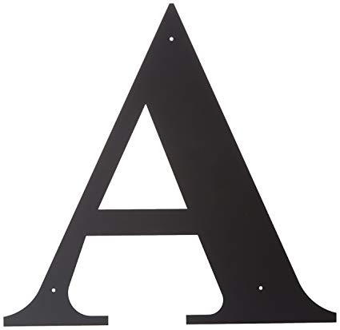
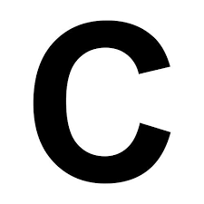

Algoritmo
Palabra que viene del nombre del matemático árabe Al
Khwarizmi (780 - 850 aprox.). Define el conjunto de instrucciones que sirven para ejecutar una tarea o resolver un problema. Los motores de búsqueda usan algoritmos para mostrar los resultados de búsquedas.
Android
Es una plataforma abierta para teléfonos móviles que
fue desarrollado por Google y por el Open Handset Alliance. Google define a Android como un "grupo de programas" (software stack) para teléfonos móviles.
ANSI
American National Standards Institute - Instituto
Nacional de Normas de Estados Unidos.
Backup
Copia de Respaldo o Seguridad. Acción de copiar archivos
o datos de forma que estén disponibles en caso de que un fallo produzca la pérdida de los originales. Esta sencilla acción evita numerosos, y a veces irremediables, problemas si se realiza de forma habitual y periódica.
Bit
Dígito Binario. Unidad mínima de almacenamiento de la
información cuyo valor puede ser 0 ó 1 (falso o verdadero respectivamente). Hay 8 bits en un byte. BitNet.
Broadband
Se refiere generalmente a conexiones a Internet con mucho
más ancho de banda que con un modem de "dial-up" convencional. No hay una especificación sobre la velocidades, pero por lo general Cable Modem, DSL o ADSL. Browser

Cache
Copia que mantiene una computadora de las páginas web
visitadas últimamente, de forma que si el usuario vuelve a solicitarlas, las mismas son leídas desde el disco duro sin necesidad de tener que conectarse de nuevo a la red; consiguiéndose así una mejora muy apreciable en la velocidad. Captcha
CD-ROM
Compact Disc Read only memory es un medio de
almacenamiento de sólo lectura.
Ciberespacio
El conjunto de información digital y a la comunicación
que se realiza a través de las redes, un espacio en el cual casi todo lo que contiene es información.